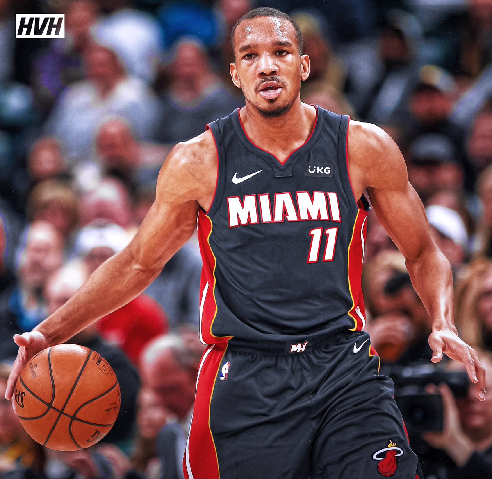

Avery Bradley (1990 년 11 월 26 일 출생)는 미국 농구 협회 (NBA) 마이애미 히트의 미국 프로 농구 선수입니다 . 그는 2010년 NBA 드래프트에서 Boston Celtics 에 의해 전체 19 위로 드래프트되기 전에 Texas Longhorns 에서 대학 농구 를 했다. Celtics와 함께 그는 NBA All-Defensive Team 멤버로 두번 인정 받았습니다. Bradley는 또한 Detroit Pistons , Los Angeles Clippers, Memphis Grizzlies 및 Los Angeles Lakers 에서 뛰었습니다.
ㅓ머니아러민 ㄹ먼 마너 ㅁ ㄴㅇ러ㅏㅁㄴ ㄹ 먼ㅇ라먼ㅇ리ㅏ먼ㅇ ㄻ넝리ㅏ먼이ㅏ럼니아러ㅐ압 ㅓㅣ얼미ㅏㅓㄴㄷ림ㄴㅇ ㄹ마ㅓ야ㅔㅏ럼ㄴㅇ